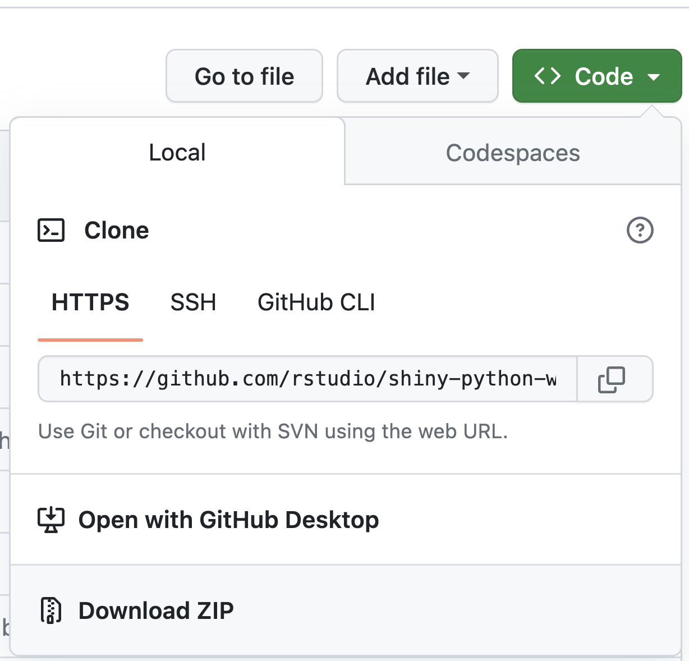

Pre-requisites
Setup
There are two ways to work through the examples and exercises in this workshop.
In your web browser with Shinylive
Shinylive allows you to run full-featured shiny apps in your browser, and includes a basic editor which is good enough to run examples.
As a result you should be able to work through all of the examples in the workshop using just the browser without installing anything locally.
Locally with python and VS Code as your IDE
While Shinylive is great, it likely isn’t the environment you’ll use to develop Shiny apps, and so it makes sense to set up VS Code and run the examples locally. To do this follow these steps before the workshop:
Install Python
Install VS Code
Install the Shiny for Python VS Code extension
Clone the repository:
git clone https://github.com/rstudio/shiny-python-workshop-2023.gitOr alternately download the repository as a zip file:

Navigate to the project directory and create a new virtual environment
python3 -m venv .venvSet your python interpreter to the virtual environment with
CMD + SHIFT + P>Select InterpreterOpen a new terminal prompt, which should switch to
(.venv)Install the relevant packages
pip install -r requirements.txtRun some examples
All of the example apps are stored in the
/appsdirectory. The examples are inapps/examplesand the problem sets are inapps/problem-sets. If you’ve installed the Shiny for Python VS Code extension, you can run any of the apps by opening theapp.pyfile and clicking the play button in the top right. (See screenshot)Alternatively, run these from the command line
shiny run <path-to-app.py> --reload